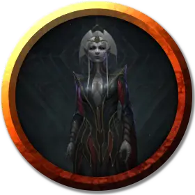

Квентл Бэнр
Quenthel Baenre
Средний Гуманоид (Эльф), нейтрально-злой, именной НИП

Класс Доспеха 19 (чешуйчатый доспех +3)
Хиты 132 (24к8 + 24)
Скорость 30 футов
| мод | спас | ||
|---|---|---|---|
| СИЛ | 10 | +0 | +0 |
| ЛОВ | 14 | +2 | +2 |
| ТЕЛ | 12 | +1 | +8 |
| мод | спас | ||
|---|---|---|---|
| ИНТ | 18 | +4 | +4 |
| МДР | 20 | +5 | +12 |
| ХАР | 18 | +4 | +11 |
Навыки Восприятие +12, Проницательность +12, Религия +11, Скрытность +9
Чувства тёмное зрение 120 футов, пассивное Восприятие 16
Языки Подземный, Эльфийский
Опасность 22 (41000 опыта)
Бонус мастерства +7
Особенности
Особое снаряжение. Квентл обладает жезлом щупалец [tentacle rod].
Наследие фей. Квентл совершает с преимуществом спасброски от очарования, и магия не может её усыпить.
Врождённое колдовство. Базовой характеристикой для врождённых заклинаний Квентл является Харизма (Сл спасброска от заклинания 15). Она может накладывать следующие заклинания, не нуждаясь в материальных компонентах:
• Неограниченно: пляшущие огоньки [dancing lights];
• 1/день каждое: левитация [levitate] (только на себя), огонь фей [faerie fire], тьма [darkness].
Использование заклинаний. Квентл является заклинателем 20-го уровня. Её базовой характеристикой является Мудрость (Сл спасброска от заклинания 20, +12 к попаданию атаками заклинаниями). Она может неограниченно накладывать любые заклинания жреца до 9-го уровня включительно.
Чувствительность к солнечному свету. Находясь на солнечном свету, Квентл совершает с помехой броски атаки, а также проверки Мудрости (Восприятие), полагающиеся на зрение.
Действия
Мультиатака. Квентл совершает три атаки жезлом щупалец.
Жезл щупалец. Рукопашная атака оружием: +9 к попаданию, досягаемость 5 футов, одна цель. Попадание: 5 (1к6 + 2) колющего урона. Если она попадает по цели всеми тремя атаками, то цель должна совершить спасбросок Телосложения Сл 15. При провале, скорость существа уменьшается вдвое, оно совершает спасброски Ловкости с помехой, и не может использовать реакции в течении 1 минуты. Кроме того, на каждом своем ходу оно может совершить или действие или бонусное действие, но не оба. В конце каждого своего хода оно может повторять спасбросок, оканчивая эффект при успехе.
Призыв демона (1/день). Квентл пытается магическим образом призвать йоклол [yochlol] с 30-процентным шансом успеха. При провале попытки Квентл получает 5 (1к10) урона психической энергией. В противном случае призванный демон появляется в свободном пространстве в пределах 60 футов от призывателя, действует как его союзник, и не может призывать других демонов. Он присутствует в течение 10 минут, пока он, либо призыватель, не умрут, или пока призыватель не отпустит его действием.
Распад. Сидя на троне, Квентл может использовать действие, чтобы наложить заклинание распад [disintegrate] (Сл спасброска 19). В случае провала цель получает 10к6 + 40 урона силовым полем. Если этот урон уменьшает хиты цели до 0, то цель распадается.
Описание
Женщины дроу родом из благородного дома с рождения воспитываются и обучаются с единой целью — стать жрицами Лолс. Паучья Королева не позволяет мужчинам дроу занимать такие должности.
Эти жрицы исполняют волю Паучьей Королевы, и потому обладают огромной силой и влиянием в обществе дроу. Матроны, которые правят домами дроу, — самые могущественные из жриц Лолс, но при этом они обязаны поддерживать баланс между преданностью Паучьей Королеве и преданностью своей семье.
См. дополнительно статью: "Бестиарий: Дроу"